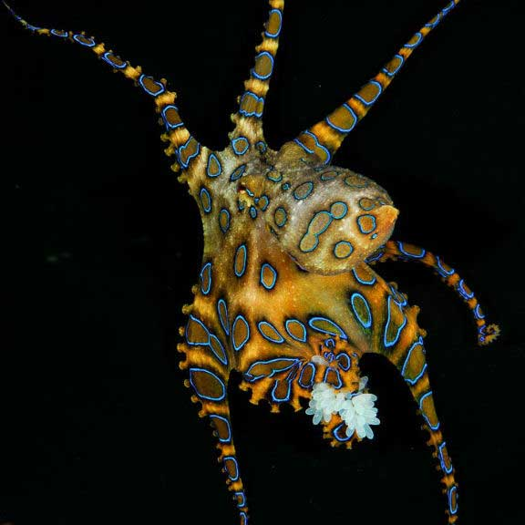

The blue-ringed octopodes (genus Hapalochlaena) are three (or perhaps four) octopus species that live in tide pools and coral reefs in the Pacific and Indian Oceans, from Japan to Australia. Their primary habitat is around southern New South Wales, South Australia, and northern Western Australia. They are recognized as one of the world's most venomous marine animals. Despite their small size, 12 to 20 cm (5 to 8 in), and relatively docile nature, they are dangerous to humans if provoked and handled, because their venom contains tetrodotoxin, a neurotoxin powerful enough to kill humans. They can be identified by their characteristic blue and black rings, and yellowish skin. When the octopus is agitated, the brown patches darken dramatically, iridescent blue rings, or clumps of rings, appear and pulsate within the maculae. Typically, 50–60 blue rings cover the dorsal and lateral surfaces of the mantle. They hunt small crabs, hermit crabs, shrimp, and other small crustaceans.
The genus was described by British zoologist Guy Coburn Robson in 1929. There are four confirmed species of Hapalochlaena, and six possible species still being researched: Greater blue-ringed octopus (Hapalochlaena lunulata) Southern blue-ringed octopus or lesser blue-ringed octopus (Hapalochlaena maculosa) Blue-lined octopus (Hapalochlaena fasciata) Hapalochlaena nierstraszi was described in 1938 from a single specimen from the Bay of Bengal, with a second specimen caught and described in 2013.
Blue-ringed octopodes spend much of their time hiding in crevices whilst displaying effective camouflage patterns with their dermal chromatophore cells. Like all octopodes, they can change shape easily, which helps them to squeeze into crevices much smaller than themselves. This helps safeguard the octopus from predators and they may even pile up rocks outside the entrance to their lair. If they are provoked, they quickly change color, becoming bright yellow with each of the 50-60 rings flashing bright iridescent blue within a third of a second as an aposomatic warning display. In the greater blue-ringed octopus (Hapalochlaena lunulata), the rings contain multi-layer light reflectors called iridophores. These are arranged to reflect blue–green light in a wide viewing direction. Beneath and around each ring there are dark pigmented chromatophores which can be expanded within 1 second to enhance the contrast of the rings. There are no chromatophores above the ring, which is unusual for cephalopods as they typically use chromatophores to cover or spectrally modify iridescence. The fast flashes of the blue rings are achieved using muscles which are under neural control. Under normal circumstances, each ring is hidden by contraction of muscles above the iridophores. When these relax and muscles outside the ring contract, the iridescence is exposed thereby revealing the blue color. In common with other Octopoda, the blue-ringed octopus swims by expelling water from a funnel in a form of jet propulsion.
The blue-ringed octopus diet typically consists of small crabs, and shrimp, but they may also feed on fish if they can catch them. The blue-ringed octopus pounces on its prey, seizing it with its tentacles and pulling it towards its mouth. It uses its horny beak to pierce through the tough crab or shrimp exoskeleton, releasing its venom. The venom paralyses the muscles required for movement, which effectively kills the prey.
The mating ritual for the blue-ringed octopus begins when a male approaches a female and begins to caress her with his modified arm, the hectocotylus. A male mates with a female by grabbing her, which sometimes completely obscures the female's vision, then transferring sperm packets by inserting his hectocotylus into her mantle cavity repeatedly. Mating continues until the female has had enough, and in at least one species the female has to remove the over-enthusiastic male by force. Males will attempt copulation with members of their own species regardless of sex or size, but interactions between males are most often shorter in duration and end with the mounting octopus withdrawing the hectocotylus without packet insertion or struggle. Blue-ringed octopus females lay only one clutch of about 50 eggs in their lifetimes towards the end of autumn. Eggs are laid then incubated underneath the female's arms for about six months, and during this process she does not eat. After the eggs hatch, the female dies, and the new offspring will reach maturity and be able to mate by the next year.
The blue-ringed octopus, despite its small size, carries enough venom to kill twenty-six adult humans within minutes. Their bites are tiny and often painless, with many victims not realizing they have been envenomated until respiratory depression and paralysis start to set in. No blue-ringed octopus antivenom is available yet, making it one of the deadliest reef inhabitants in the ocean.
The octopus produces venom containing tetrodotoxin, histamine, tryptamine, octopamine, taurine, acetylcholine, and dopamine. The venom can result in nausea, respiratory arrest, heart failure, severe and sometimes total paralysis, blindness, and can lead to death within minutes if not treated. Death, if it occurs, is usually from suffocation due to paralysis of the diaphragm. The major neurotoxin component of the blue-ringed octopus is a compound that was originally known as maculotoxin but was later found to be identical to tetrodotoxin, a neurotoxin also found in pufferfish, and in some poison dart frogs. Tetrodotoxin is 1,200 times more toxic than cyanide.Tetrodotoxin blocks sodium channels, causing motor paralysis, and respiratory arrest within minutes of exposure. The tetrodotoxin is produced by bacteria in the salivary glands of the octopus. A person must be in contact with the octopus to be envenomated. Faced with danger, the octopus's first instinct is to flee. If the threat persists, the octopus will go into a defensive stance, and show its blue rings. Only if an octopus is cornered, and touched, will a person be in danger of being bitten and envenomated.
Tetrodotoxin causes severe and often total body paralysis. Tetrodotoxin envenomation can result in victims being fully aware of their surroundings but unable to breathe. Because of the paralysis that occurs, they have no way of signaling for help or any way of indicating distress. The victim remains conscious and alert in a manner similar to curare or pancuronium bromide. This effect, however, is temporary and will fade over a period of hours as the tetrodotoxin is metabolized and excreted by the body. The symptoms vary in severity, with children being the most at risk because of their small body size.
First aid treatment is pressure on the wound and artificial respiration once the paralysis has disabled the victim's respiratory muscles, which often occurs within minutes of being bitten. Because the venom primarily kills through paralysis, victims are frequently saved if artificial respiration is started and maintained before marked cyanosis and hypotension develop. Efforts should be continued even if the victim appears not to be responding. Respiratory support, together with reassurance, until medical assistance arrives ensures the victims will generally recover. It is essential that rescue breathing be continued without pause until the paralysis subsides and the victim regains the ability to breathe on their own. This is a daunting physical prospect for a single individual, but use of a bag valve mask respirator reduces fatigue to sustainable levels until help can arrive. Definitive hospital treatment involves placing the patient on a medical ventilator until the toxin is removed by the body. Victims who survive the first twenty-four hours usually recover completely.
The blue-ringed octopus is the prominent symbol of the secret order of female bandits and smugglers in the James Bond film Octopussy, appearing in an aquarium tank, on silk robes, and as a tattoo on women in the order. The animal was also featured in the book State of Fear by Michael Crichton, where a terrorist organization utilized the animal's venom as a favored murder weapon. The Adventure Zone featured a blue-ringed octopus in its "Petals To The Metal" series.